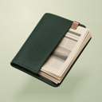
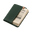
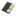
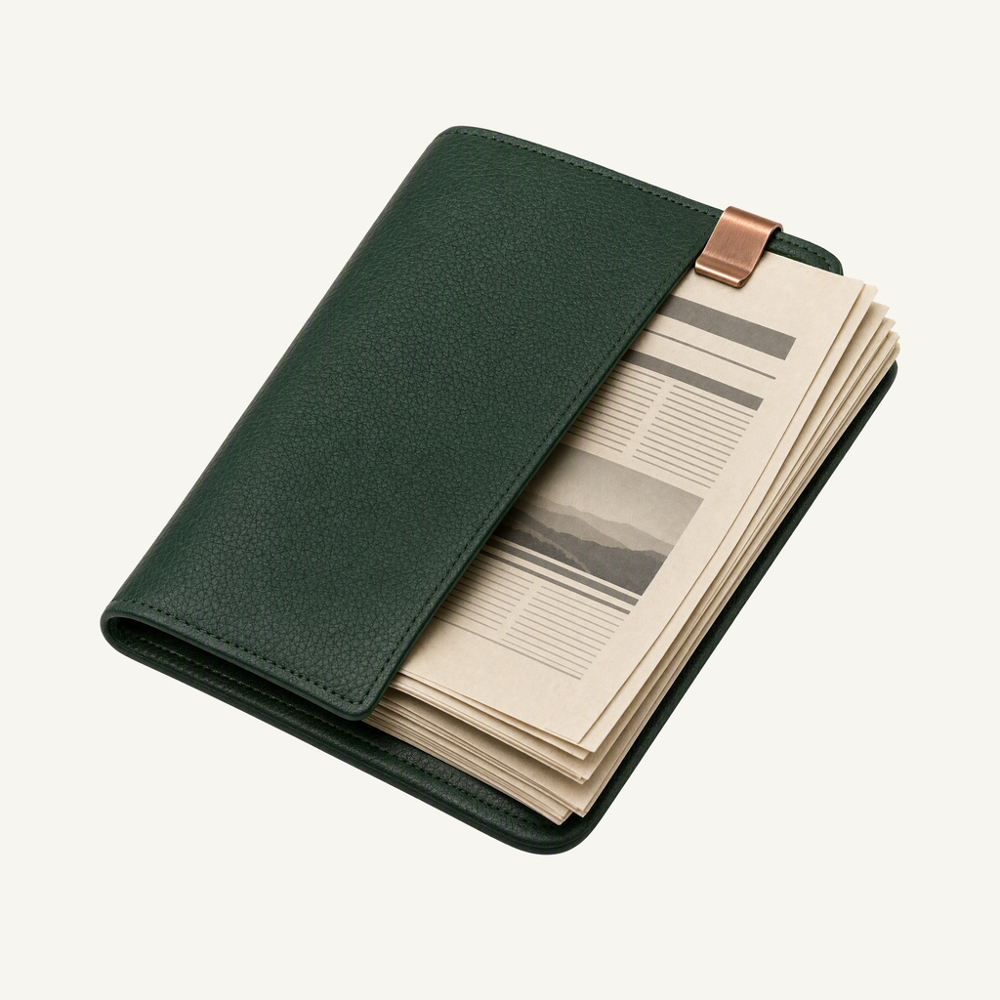
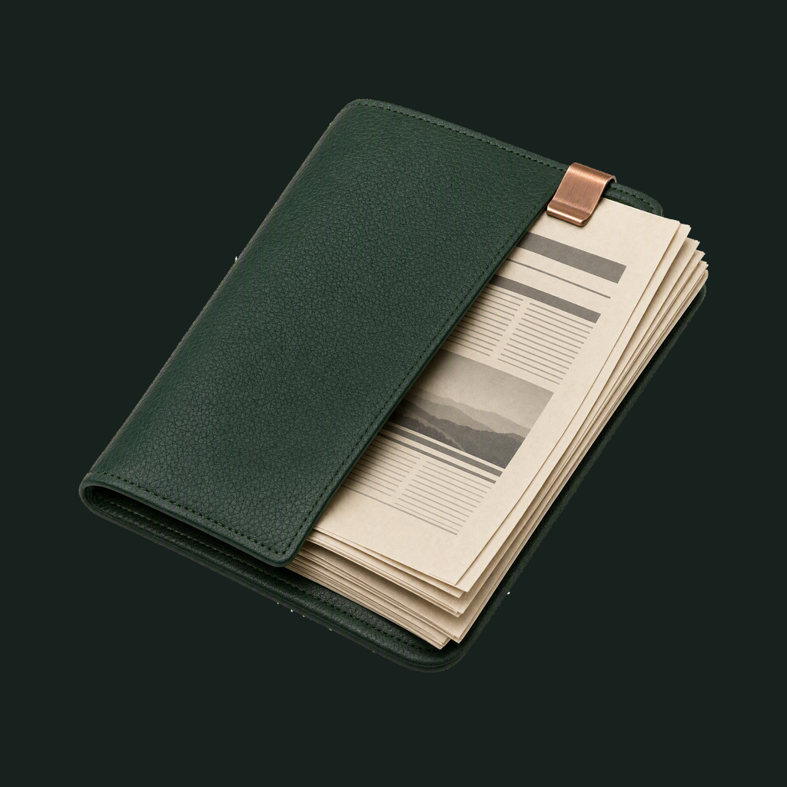

01 / Composition
A page ready to open
A forest-green folio holds a folded newspaper and one copper clip. The complete page corners and quiet layered silhouette make an RSS reading object, without a busy desk scene.
Physical-object family · Refined identity
The world, gathered for a quiet read.
Adopted redesign · finishing 01
Native 2048 × 2048
01 / Composition
A forest-green folio holds a folded newspaper and one copper clip. The complete page corners and quiet layered silhouette make an RSS reading object, without a busy desk scene.
02 / Drawing
Fine leather grain and dense ivory paper create tactile contrast. Abstract headline and column rules suggest articles without generating illegible text.
03 / Presentation
Staggered editorial columns, fine baseline rules and an offset paper-fold seam in warm olive paper. The field, grain and contact shadow are independent of transparent app marks.
Presentation tiles at 128/64 px; transparent artwork for small app and browser marks.



At 128/64 px, the green folio and layered ivory pages remain clear. At 32/24/16 px, the compact silhouette and dominant colors carry recognition; fine material detail, printed marks and background lines naturally merge.
A designed background, with colors sampled from the exact native artwork.
Select a swatch to copy its hex value. The GeekHub UI primary (#1CCE7B) remains a separate product color.
One transparent foreground, checked on two contrasting backgrounds.


Azure Foundry · gpt-image-2 · one request · native 2048 × 2048
Loading study text…
Approved material study: physical-render quality and clean isolated edges only, not block geometry or checker colors. Owner presentation board: tactile material and balanced offset framing; backdrop composed separately. Owner presentation detail: refined tonal contrast and quiet relief; never copy another project's motif.


{kind=link}
{kind=link}
{kind=link}
{kind=link}
{kind=link}